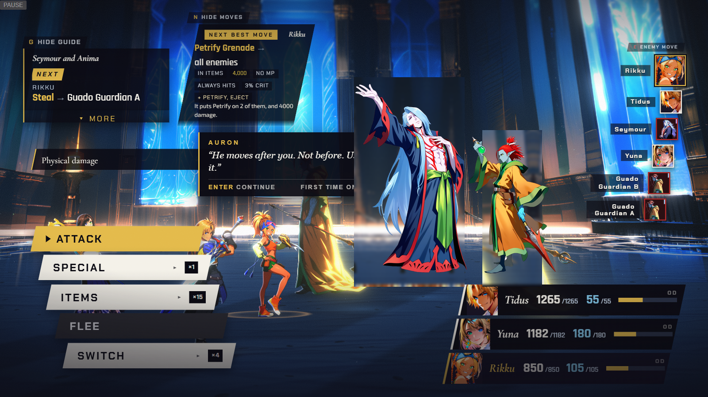
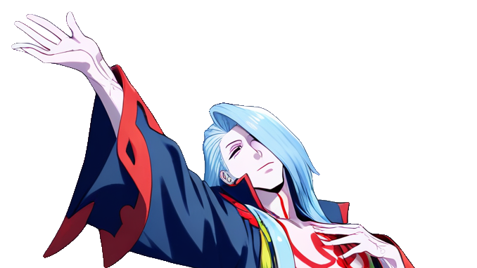
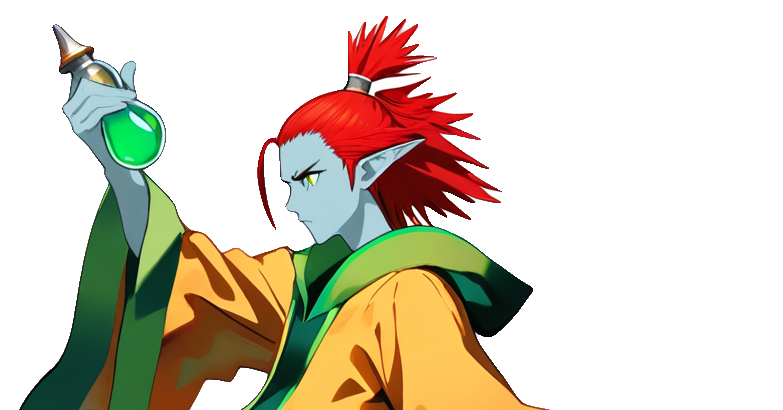
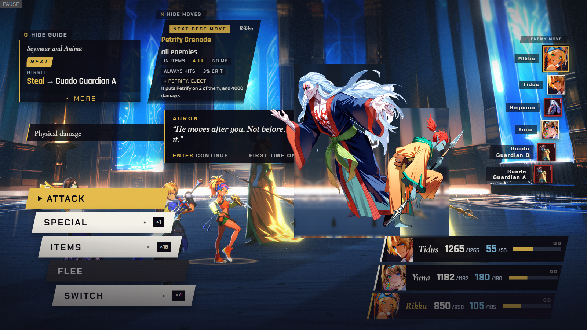
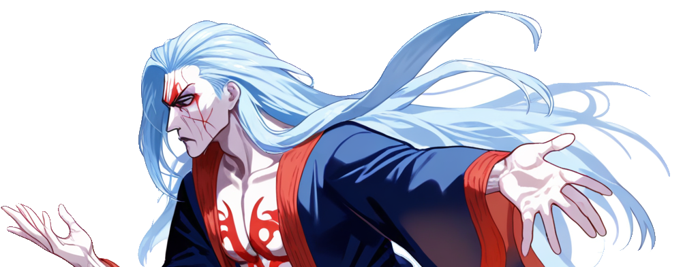
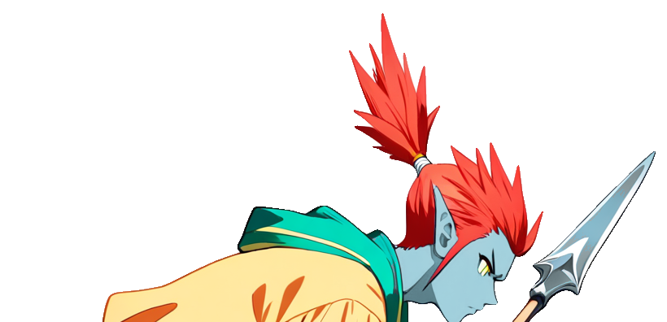
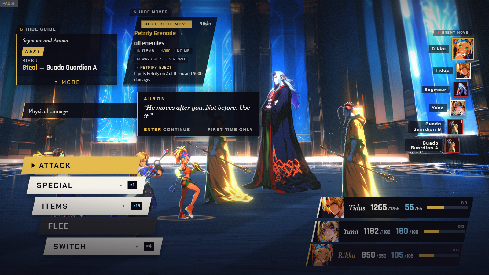
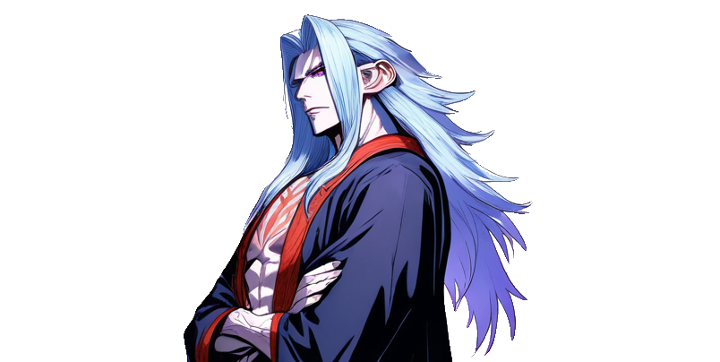
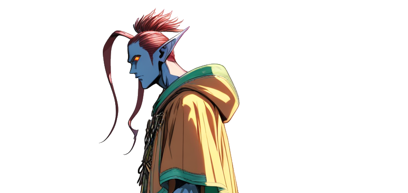

idle → cast, both CANDIDATE
Seymour cast — 6
Guardian cast — 6Idle, arms crossed / spear planted. Every action — Seymour's -ra spells and Multi- casts, the Guardians' Protect, Blizzard, Thunder, Remedy, Hi-Potion — snaps to the cast painting for about a second under the flash, then cuts to target. Every hit: the idle itself recoils under the flash, no hurt file needed.
Cost: smallest — both casts are CANDIDATE already, one repair pass (facing flag, colour match) from the bar of 7.

attack, both CANDIDATE, below bar
Seymour attack — 4
Guardian attack — 5A presenter change would send a physical special to a second, distinct action painting. But research §4.1/§4.2: Seymour's whole kit is magic and the Guardians only ever cast or use items — neither throws a physical attack in this fight, so the pose would almost never show.
Cost: +1 painting per subject repaired to 7 (identity drift on both), for a pose the fight's own data never calls.

idle only, the real capture
Seymour idle — 6
Guardian idle — 6No painting beyond idle: every spell, hit and heal plays as the idle under the engine's own lunge, flash, tint and shake. Identity is perfect — neither actor ever leaves model.
Cost: none beyond the idle repair both already need (a facing flag each). Reads as the least animated of the three.